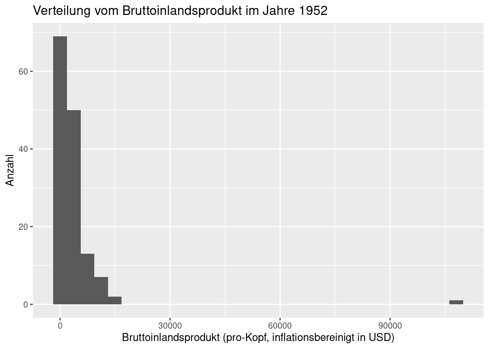
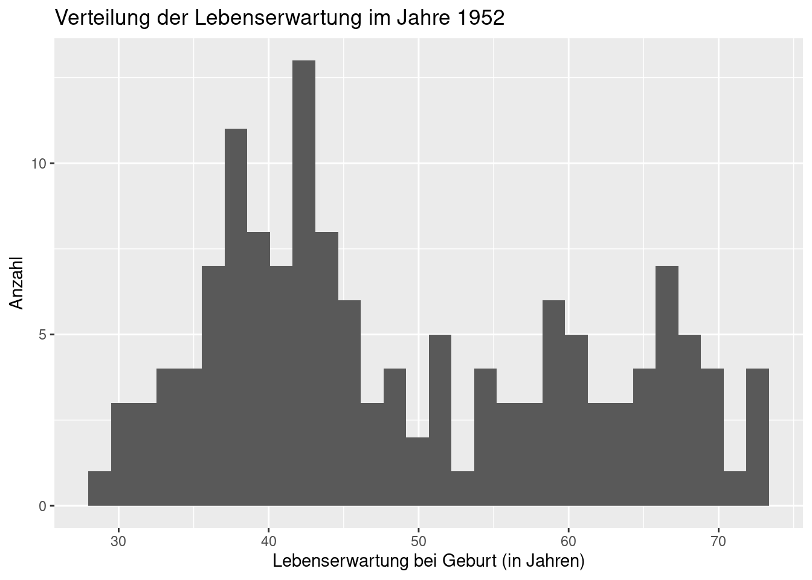
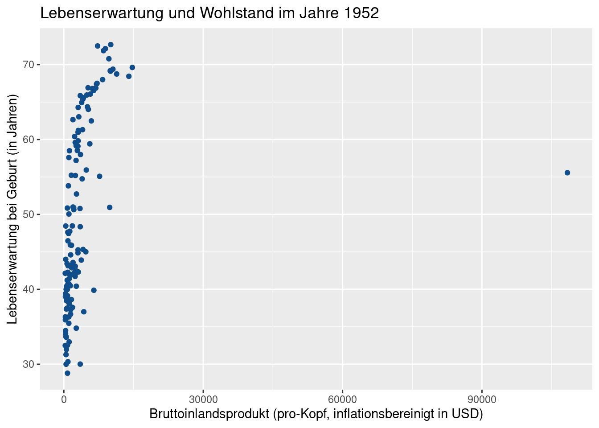
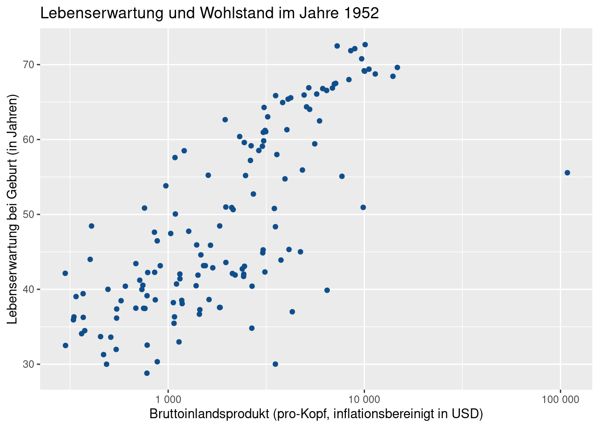
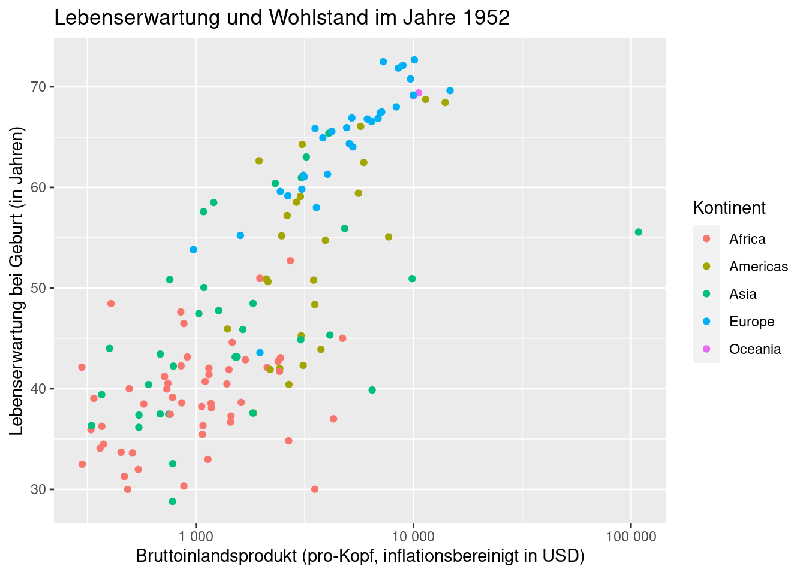
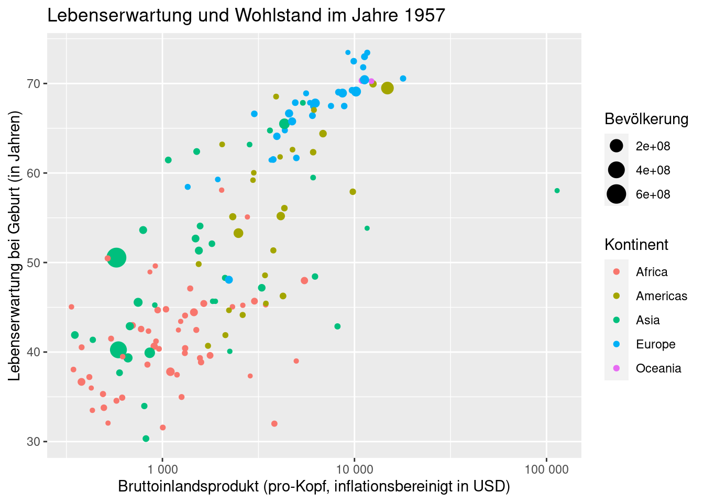
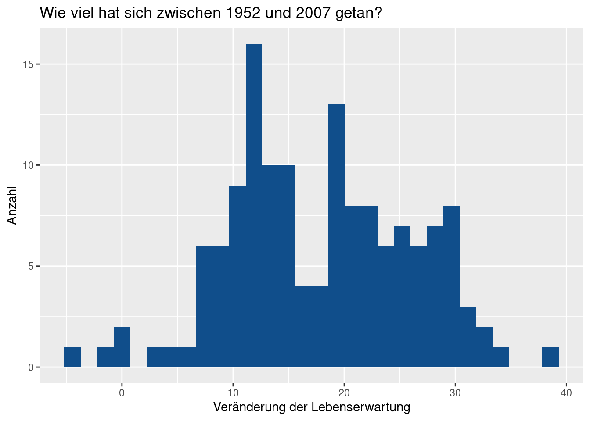
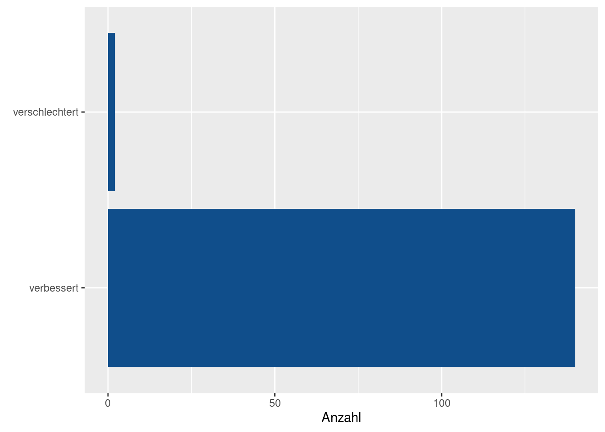

Auf diesem Übungsblatt wollen wir die gelernten Inhalte aus der Einführung nochmals wiederholen und erweitern. Da R (und Programmierung) für viele von euch recht neu ist, ist dies kein klassisches Übungsblatt. Dieses Blatt ist untypisch in dem Sinne, dass ihr nicht einfach eine Aufgabenstellung bekommt und damit alleine gelassen werdet.
Stattdessen soll dieses Blatt euch durch eine winzige Datenanalyse durchleiten. Dabei werdet ihr immer wieder aufgefordert, kleine Schritte selbst zu übernehmen. Für das erfolgreiche Absolvieren dieser Aufgaben werdet ihr mit Punkten belohnt. Am Ende dieses Dokuments findet ihr nochmal eine Übersicht über die Aufgaben, die ihr zu erledigen habt.
Erster Blick in unseren Datensatz
Wir wollen uns mit dem Datensatz gapminder aus dem gleichnamigen Paket beschäftigen. Dazu muss dieses Paket zunächst installiert werden. Tu dies jetzt, um dann die folgenden Befehle fehlerfrei ausführen zu können.
Nun haben wir Zugriff auf den Gapminder Datensatz. Dieser sieht wie folgt aus.
gapminder
# A tibble: 1,704 × 6
country continent year lifeExp pop gdpPercap
<fct> <fct> <int> <dbl> <int> <dbl>
1 Afghanistan Asia 1952 28.8 8425333 779.
2 Afghanistan Asia 1957 30.3 9240934 821.
3 Afghanistan Asia 1962 32.0 10267083 853.
4 Afghanistan Asia 1967 34.0 11537966 836.
5 Afghanistan Asia 1972 36.1 13079460 740.
6 Afghanistan Asia 1977 38.4 14880372 786.
7 Afghanistan Asia 1982 39.9 12881816 978.
8 Afghanistan Asia 1987 40.8 13867957 852.
9 Afghanistan Asia 1992 41.7 16317921 649.
10 Afghanistan Asia 1997 41.8 22227415 635.
# … with 1,694 more rows
Finde nun heraus, welche Informationen dieser Datensatz beschreibt und wofür die Spaltennamen in diesem Datensatz stehen. Nutze dabei, dass Datensätze genauso wie Funktionen in den Hilfeseiten dokumentiert sind. Halte deine Erkenntnisse in einem Quartodokument fest.
lifeExp = life expectancy at birth, in yearspop = populationgdpPercap = GDP per capita (US$, inflation-adjusted)
Wohlstand und Lebenserwartung
Hans Roslings 200 Countries, 200 Years, 4 Minutes ist mittlerweile ein Klassiker. Diesen Klassiker wollen wir hier mit unseren Datensatz in Teilen nachbauen. Schau dir dazu zunächst das Video an, damit du weißt, worum es geht.
Erstmal nur ein Jahr
Betrachten wir zunächst mal nur das Jahr 1952 in unserem Datensatz. Erstelle dazu eine Variable gapminder_1952, die nur die Daten dieses des Jahres 1952 enthält. Dieser Datensatz sollte so aussehen
gapminder_1952 <- gapminder |>filter(year ==1952)
gapminder_1952
# A tibble: 142 × 6
country continent year lifeExp pop gdpPercap
<fct> <fct> <int> <dbl> <int> <dbl>
1 Afghanistan Asia 1952 28.8 8425333 779.
2 Albania Europe 1952 55.2 1282697 1601.
3 Algeria Africa 1952 43.1 9279525 2449.
4 Angola Africa 1952 30.0 4232095 3521.
5 Argentina Americas 1952 62.5 17876956 5911.
6 Australia Oceania 1952 69.1 8691212 10040.
7 Austria Europe 1952 66.8 6927772 6137.
8 Bahrain Asia 1952 50.9 120447 9867.
9 Bangladesh Asia 1952 37.5 46886859 684.
10 Belgium Europe 1952 68 8730405 8343.
# … with 132 more rows
Nun wollen wir zunächst einen groben Überblick über die Verteilung von gdpPercap und lifeExp erhalten. Erstelle dazu für jede dieser Variablen ein Histogramm. Achte dabei darauf, dass du die folgenden Grafiken inklusive Beschriftungen replizierst. Die Bildüberschrift kannst du genauso wie alle Beschriftungen in einer labs()-Schicht bestimmen. Also
labs(x ="x-Beschriftung", y ="y-Beschriftung",title ="Ein Titel")
Histogramm für gdpPercap
gapminder_1952 |>ggplot() +geom_histogram(aes(x = gdpPercap), bins =30) +labs(x ='Bruttoinlandsprodukt (pro-Kopf, inflationsbereinigt in USD)',y ='Anzahl',title ='Verteilung vom Bruttoinlandsprodukt im Jahre 1952' )

Histogramm für lifeExp
gapminder_1952 |>ggplot() +geom_histogram(aes(x = lifeExp), bins =30) +labs(x ='Lebenserwartung bei Geburt (in Jahren)',y ='Anzahl',title ='Verteilung der Lebenserwartung im Jahre 1952' )

Das erste Histogramm zeigt, dass es ein Land gab, dass ein Bruttoinlandsprodukt über 90000 gehabt haben muss. Finde heraus, um welches Land es sich dabei handelte und dokumentiere deine Erkenntnisse in einem Quartodokument.
Gemeinsame Verteilung
Unsere Histogramme haben uns jeweils die Lebenserwartung und das BIP einzeln visualisiert. Um Zusammenhänge zu erkennen, muss man jedoch die gemeiname Verteilung dieser Größen betrachten. Erstelle also nun ein Punktdiagramm (ähnlich wie es Hans Rosling getan hat). Dies soll so aussehen.
gapminder_1952 |>ggplot(aes(x = gdpPercap, y = lifeExp)) +geom_point(color ='dodgerblue4', ) +labs(x ='Bruttoinlandsprodukt (pro-Kopf, inflationsbereinigt in USD)',y ='Lebenserwartung bei Geburt (in Jahren)',title ='Lebenserwartung und Wohlstand im Jahre 1952' )

Abbildung 1: Unser erstes Punktdiagramm
Dies ist allerdings kein besonders toller Plot. Genau wie bei unserem vorherigen Histogramm ist alles an der linken Seite der Grafik konzentriert. Dies macht die Grafik schwer zu lesen.
Wieso hatte also die Grafik von Hans Rosling dieses Problem nicht? Schau dir nochmal das Video an und achte genau auf die x-Achse. Fällt dir was auf?
Nicht schlimm, wenn du es nicht sofort erkennst. Ich verrate dir die Lösung. Hans Rosling verwendet eine logarithmierte x-Achse, d.h. die x-Achse macht nicht immer die gleichen Schritte (so wie bei uns). Im Video macht die Achse die folgenden Schritte: 400 - 4000 - 40000. Somit geht die Achse die Potenzen \(4 \cdot 10^k\), \(k = 1, \ldots, 3\) durch.
Dies können wir in unserer Grafik auch machen. Dazu muss lediglich die zusätzliche Schicht scale_x_log10() zu unserer Grafik “addiert” werden (ohne jegliche Argument - einfach () leer lassen). Tu dies nun. Dann sollte deine Grafik so aussehen.
gapminder_1952 |>ggplot(aes(x = gdpPercap, y = lifeExp)) +geom_point(color ='dodgerblue4' ) +labs(x ='Bruttoinlandsprodukt (pro-Kopf, inflationsbereinigt in USD)',y ='Lebenserwartung bei Geburt (in Jahren)',title ='Lebenserwartung und Wohlstand im Jahre 1952' ) +scale_x_log10()
Abbildung 2: Logarithmierte Achsen
Wenn du in scale_x_log10() noch labels = scales::label_number() reinschreibst, dann kriegst du noch schönere Achsenbeschriftungen. Das musst du aber nicht machen, wenn dir das zu kompliziert (oder zu mysteriös) ist. In den nachfolgenden Grafiken werde ich die schöneren Beschriftungen verwenden, aber das kannst du ignorieren.
gapminder_1952 |>ggplot(aes(x = gdpPercap, y = lifeExp)) +geom_point(color ='dodgerblue4' ) +labs(x ='Bruttoinlandsprodukt (pro-Kopf, inflationsbereinigt in USD)',y ='Lebenserwartung bei Geburt (in Jahren)',title ='Lebenserwartung und Wohlstand im Jahre 1952' ) +scale_x_log10(labels = scales::label_number())

Kontinente ins Spiel bringen
In Hans Roslings Video wurden die Punkte entsprechend ihres Kontinents unterschiedlich eingefärbt. Dies solltest du jetzt auch tun. Am Ende solltest du die folgende Grafik erhalten.
gapminder_1952 |>ggplot(aes(x = gdpPercap, y = lifeExp,color = continent ) ) +geom_point() +labs(x ='Bruttoinlandsprodukt (pro-Kopf, inflationsbereinigt in USD)',y ='Lebenserwartung bei Geburt (in Jahren)',title ='Lebenserwartung und Wohlstand im Jahre 1952',color ='Kontinent' ) +scale_x_log10(labels = scales::label_number())

Abbildung 3: Logarithmierte Achsen
Größe der Punkte nach Bevölkerung
Nun müssen wir noch die Punkte entsprechend der Bevölkerung eines Landes skalieren. Hier ist ein bisschen Transferleistung gefragt. Wir haben bisher die Punkte immer gleichgroß und damit size datenunabhängig gemacht. Jetzt sollen wir size datenabhängig machen. Dies sieht dann am Ende des Tages so aus.
gapminder_1952 |>ggplot(aes(x = gdpPercap, y = lifeExp,color = continent,size = pop ) ) +geom_point() +labs(x ='Bruttoinlandsprodukt (pro-Kopf, inflationsbereinigt in USD)',y ='Lebenserwartung bei Geburt (in Jahren)',title ='Lebenserwartung und Wohlstand im Jahre 1952',color ='Kontinent',size ='Bevölkerung' ) +scale_x_log10(labels = scales::label_number())
Abbildung 4: Logarithmierte Achsen
Mehrere Jahre betrachen
Wir haben nun eine halbwegs solide Imitation von Hans Roslings Grafik gebastelt. Allerdings betrachten wir aktuell nur ein einziges Jahr. Ziel ist es nun, eine eigene Funktion zu schreiben, die ein Jahr entgegen nimmt und uns eine Grafik für diese Jahr zurückgibt.
Die Zutaten für diese Funktion haben wir schon:
Filtere gapminder entsprechend dem übergebenen Jahr
Erstelle die obige Grafik und ersetze den Datensatz durch den neuen gefilterten Datensatz.
Nun müssen wir nur noch verstehen, wie wir Funktionen erstellen. Das Grundgerüst dafür sieht so aus.
Cosima Meyer hat dazu erst kürzlich, eine gute Grafik erstellt. Vielleicht hilft sie dir beim Verständnis. Beispielsweise könnten wir eine Funktion schreiben, die aus unserem Datensatz bestimmte Länder extrahiert.
extract_country <-function(data, country_name) {# Zwischenergebnisse können in Funktionen auch in Variablen gespeichert werden tmp <- data |>filter(country == country_name)# Ausgabereturn(tmp)}extract_country(gapminder, 'Germany')
# A tibble: 12 × 6
country continent year lifeExp pop gdpPercap
<fct> <fct> <int> <dbl> <int> <dbl>
1 Germany Europe 1952 67.5 69145952 7144.
2 Germany Europe 1957 69.1 71019069 10188.
3 Germany Europe 1962 70.3 73739117 12902.
4 Germany Europe 1967 70.8 76368453 14746.
5 Germany Europe 1972 71 78717088 18016.
6 Germany Europe 1977 72.5 78160773 20513.
7 Germany Europe 1982 73.8 78335266 22032.
8 Germany Europe 1987 74.8 77718298 24639.
9 Germany Europe 1992 76.1 80597764 26505.
10 Germany Europe 1997 77.3 82011073 27789.
11 Germany Europe 2002 78.7 82350671 30036.
12 Germany Europe 2007 79.4 82400996 32170.
Alternativ könnte man auch auf return() verzichten und tmp einfach so aufrufen. Eine Funktion gibt automatisch die letzte aufgerufene Variable aus. Dies sähe für unser letztes Beispiel so aus.
extract_country <-function(data, country_name) { tmp <- data |>filter(country == country_name)# Aufrufen statt return() geht auch tmp}
Schreibe nun eine Funktion plot_gapminder_year, die für ein angegebenes Jahr selected_year die obige Grafik ausgibt. Dies sieht dann so aus.
plot_gapminder_year <-function(selected_year) { text <-paste('Lebenserwartung und Wohlstand im Jahre', selected_year) gapminder |>filter(year == selected_year) |>ggplot(aes(x = gdpPercap, y = lifeExp,color = continent,size = pop ) ) +geom_point() +labs(x ='Bruttoinlandsprodukt (pro-Kopf, inflationsbereinigt in USD)',y ='Lebenserwartung bei Geburt (in Jahren)',title = text,color ='Kontinent',size ='Bevölkerung' ) +scale_x_log10(labels = scales::label_number())}
plot_gapminder_year(selected_year =1957)

Beachte dabei, dass sich der Text im Titel auch ändern muss. Hier könnte es hilfreich sein, in der Funktion eine Zwischenvariable mit dem korrekten Text abzuspeichern und diese Variable dann in labs() zu verwenden. Die Funktion paste() könnte sich dabei als hilfreich erweisen.
Output mit for-Schleife
Nutze nun deine Funktion plot_gapminder_year() und eine for-Schleife, um die Grafiken für die Jahre 1952, 1967, 1992 und 2007 in ein Quartodokument zu schreiben. Du wirst dabei die Funktion print() benötigen, um eine Ausgabe der Grafik in der Schleife zu erzwingen.
In deinem Quartodokument solltest du dann den Output der Schleife direkt untereinander sehen. Ich habe es hier mal in einem tabset-panel angeordnet, damit man die Grafiken leichter vergleichen kann. Dies musst du aber nicht tun. Wenn du die Schleife in RStudio ausführst, kann es sein, dass du nur die 2007er Grafik zu Gesicht bekommst. Dies liegt daran, dass die Grafiken so schnell von R generiert werden, dass nur noch die letzte im Plots-Fenster zu sehen ist.
Welche Länder haben ihre Lebenserwartung verschlechtert?
Finden wir nun heraus, ob manche Länder ihre Lebenserwartung verschlechtert haben. Dazu benötigen wir nur die Variablen country, year und lifeExp. Erstelle eine Variable comparison_data, der nur diese Spalten und nur die Jahre 1952 und 2007 enthält.
Der %in%-Operator kann dir dabei behilflich sein. Finde mit einer schnellen Internetrecherche raus, wie dieser Operator funktioniert. Dein Datensatz comparison_data sollte dann so aussehen.
# A tibble: 284 × 3
country year lifeExp
<fct> <int> <dbl>
1 Afghanistan 1952 28.8
2 Afghanistan 2007 43.8
3 Albania 1952 55.2
4 Albania 2007 76.4
5 Algeria 1952 43.1
6 Algeria 2007 72.3
7 Angola 1952 30.0
8 Angola 2007 42.7
9 Argentina 1952 62.5
10 Argentina 2007 75.3
# … with 274 more rows
Nun können wir den Datensatz ein wenig umsortieren. Dies geht mit der Funktion pivot_wider(). Im Prinzip brauchst du nicht zu verstehen, wie sie funktioniert. Du kannst einfach den folgenden Codeschnipsel übernehmen.
# A tibble: 142 × 3
country lifeExp_1952 lifeExp_2007
<fct> <dbl> <dbl>
1 Afghanistan 28.8 43.8
2 Albania 55.2 76.4
3 Algeria 43.1 72.3
4 Angola 30.0 42.7
5 Argentina 62.5 75.3
6 Australia 69.1 81.2
7 Austria 66.8 79.8
8 Bahrain 50.9 75.6
9 Bangladesh 37.5 64.1
10 Belgium 68 79.4
# … with 132 more rows
Wir können nun diese neue Tabelle nutzen, um herauszufinden, welche Länder von 1952 bis 2007 ihre Lebenserwartung verschlechtert haben. Dokumentiere den dazu nötigen Code in einem Quartodokument. Der entsprechende Output sieht wie folgt aus.
# A tibble: 2 × 3
country lifeExp_1952 lifeExp_2007
<fct> <dbl> <dbl>
1 Swaziland 41.4 39.6
2 Zimbabwe 48.5 43.5
Wie groß sind die Veränderungen?
Füge der Tabelle comparison_data_wider nun noch die Spalten change and change_result hinzu. Speichere die neue Tabelle in der Variable lifeexp_changes. Die Spalte change_result sollte den Eintrag "verbessert" enthalten, wenn die Lebenserwartung sich verbessert hat. Ansonsten enthält sie den Eintrag "verschlechtert". Die Funktion if_else() kann hier hilfreich sein.
Erstelle zusätzlich ein Histogramm, das die Verteilung der Veränderung der Lebenserwartungen aller Länder zeigt. Es sollte so aussehen:
lifeexp_changes |>ggplot(aes(x = change)) +geom_histogram(fill ='dodgerblue4', bins =30) +labs(x ='Veränderung der Lebenserwartung',y ='Anzahl',title ='Wie viel hat sich zwischen 1952 und 2007 getan?' )

Abbildung 5: Verteilung der Veränderung der Lebenserwartung
Und wieviele Länder haben sich verbessert
Erstelle abschließend noch ein Balkendiagram, das zählt, wie viele Länder sich verbessert bzw. verschlechtert haben. Diese Grafik sollte so aussehen (Hinweis: '' ist ein “leerer” Text):
lifeexp_changes |>ggplot(aes(y = change_result)) +geom_bar(fill ='dodgerblue4') +labs(x ='Anzahl', y =element_blank())

Abbildung 6: Die meisten Länder haben glücklicherweise ihre Lebenserwartung erhöhnt
Zusammenfassung der Aufgaben
Die Aufgaben, die ihr hier zu erledigen habt, sind durch den Text verstreut gewesen. Damit ihr auch nichts vergesst, hier nochmal eine Zusammenfassung von dem was ihr tun sollt.
gapminder-Informationen in Quartodokument festhalten (1)
gapminder_1952-Variable erstellen (1)
gdpPerCap- und lifeExp-Histogramme erstellen (2)
Dokumentiere, welches Land einen BIP über 90000 hat (1)